Directing My Digital Double With an AI Crew
Watch the 2-minute production film →
The full 45-second experiment, side by side. Original audio. The take comparisons further down are silent loops.
The idea was simple: put me in the music video.
Keep the camera moves, the energy, the performance, and the woman sharing the scene. Replace the male performer with a version of me that belonged in that world. Give me the sunglasses, the attitude, and a wardrobe I would probably need a very good excuse to wear in real life.
I wanted to test character replacement with my local MiniMax H3 setup. But I also wanted to see how far I could push a small production system around it: a custom dispatcher, rented GPUs when I needed more rendering capacity, and a crew of AI agents helping me get from an idea to a finished sequence.
The result is a 45-second experiment in directing a digital double. Behind it is a process that started to feel surprisingly familiar: character design, shot planning, dailies, notes, and another take.
First I had to decide who was walking into the scene
My first direction was rock star: glasses, leather jackets, a little more flair than everyday me. Then I pushed the design further. One version with a hat felt too cowboy, so I steered it toward Tokyo street style. I tried braids, decided they did not suit me, and came back to my own loose black hair with deliberate silver streaks at the front.
The character settled into a tank top, shorts, tattoos, bracelets, and layered chains. I wanted it to feel like my own styling, rather than a copy of whatever the original performer happened to be wearing.
A character sheet became our costume and hair reference. We needed views with glasses and without them, because the glasses were part of the action in some shots. Later, we put the character against a pink studio background with lighting closer to the video. That gave the model a more useful picture of the world this person was supposed to inhabit.
I kept my original portrait beside that designed character. The styling could be adventurous. The face still had to be mine.
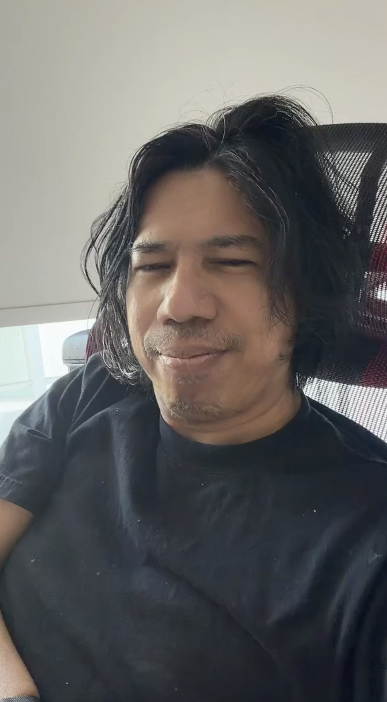
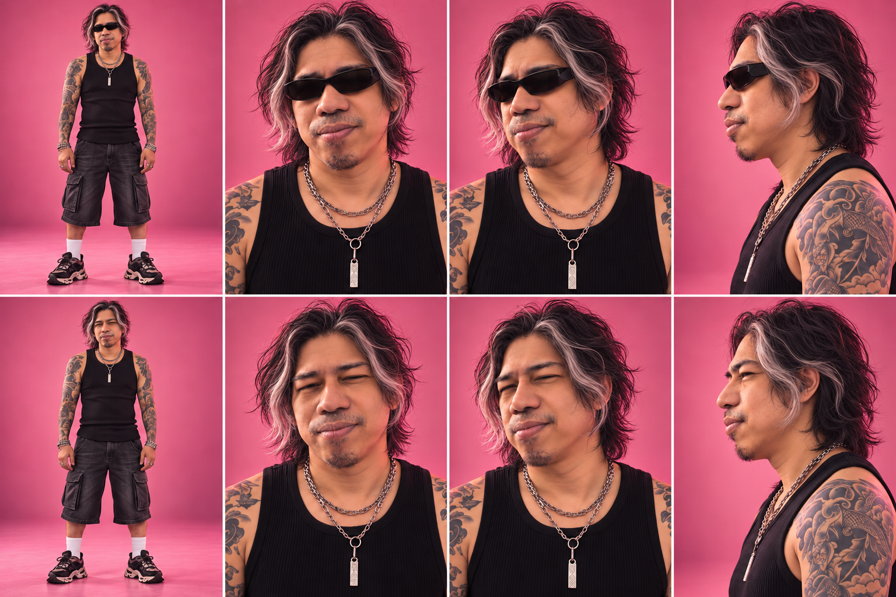
A longer video needs a shot list
An isolated clip is one thing. A longer music-video sequence keeps changing the rules. Suddenly we are at the drums, then sitting on the floor, then close to the camera, then disappearing into a fast pan. The outfit might stay consistent, but the action, framing, and relationship between the performers change at every cut.
We started with a shorter clip and moved to a roughly 45-second version with a similar opening. The system detected cuts and sliced the video into individual shots. Those cuts then needed curation: which shots contained the person to replace, which could reuse an existing take, and which did not need generation at all. A woman-only shot could stay as it was.
Each replacement shot became its own job in my custom H3 workflow. It had a source segment, character references, a description of the action, and instructions about what had to stay. That last part mattered as much as the replacement itself: the woman, the drum kit, the flags, the camera position, the number of people in the room.
This let me direct the sequence one shot at a time. If a close-up lost my likeness, we could work on that close-up without throwing away a good performance somewhere else.
Giving the production an AI crew
Once the jobs multiplied, I needed more than one agent trying to do everything in order. Preparing the next shot, watching the machines, and reviewing a finished take all compete for attention. A rented GPU can finish its work while everyone is still looking at yesterday's problem.
We divided the work into four roles. One coordinating agent kept track of the whole production: my latest direction, the selected takes, and what still needed attention. A preparation agent turned shot notes into prompts, assembled the references and workflow inputs, and dispatched the jobs. A farm-monitoring agent checked whether the machines were actually picking up work, returning results, or failing. A QC agent examined the outputs and sent specific notes back into the process.
That was the agentic harness in practice: a small crew with separate responsibilities, shared production records, and a way to pass work between them. I stayed in the director's seat.
Direction → prepare → render → review → revised take
The QC work went down to individual frames on the candidates being considered for the edit. Was my face drifting toward the source actor? Had a bracelet become a sleeve? Did a second man appear at the back? Were the glasses on the right performer? Did the expression still belong to the moment?
Those observations became the next set of notes for the preparation agent. Sometimes the answer was a more specific prompt. Sometimes it was a better reference image. Sometimes the guide itself was wrong, and no amount of persuasive wording would fix it. The next job needed a different input.
Tensor Master and Pocket AI made the farm part of my studio
Tensor Master and Pocket AI are the custom front ends I use around ComfyUI. ComfyUI remains the place where the generation workflow lives, with its nodes, models, and settings. The front ends give me a way to direct that work through a shared dispatcher pool: see what is queued, see which machines are available, and send jobs to local or rented GPUs without managing every machine separately.
The idea is to make adding capacity a one- or two-click operation once the profiles are configured. If my local card is occupied or the shot list is growing, I can bring in a rental worker—or several—and put them to work alongside it. I do not have to choose between an entirely local setup and an entirely cloud setup. My own machine can keep rendering while rented workers take other shots from the pool.
The broader setup is designed to bring together providers such as Vast AI and RunPod, as well as my own custom workers. For this particular video, we used the local RTX 3090 and rented RTX 5090 workers on Vast AI. That distinction matters: the platform gives me more places to find capacity, while the production records tell us which machines actually made these takes.
Profiles and prepared images take care of another part of the job: giving a new worker the environment and models it needs. Instead of rebuilding a ComfyUI machine by hand and dragging model files around every time I rent a GPU, I can provision it from the selected setup. It is a way of carrying the required working environment onto another machine. Downloads and startup still take time, but they become part of deployment rather than another manual production chore.
I can direct this from my phone as well as my PC. I can check the queue, follow a worker, look at a returned take, ask the agents for a repair, or add capacity when the next batch is ready. The phone becomes a small production desk: the creative decisions and the farm controls are close enough together that I can act on a note without sitting in front of every render machine.
The rental controls also include a set maximum lifetime and an idle cutoff. Those are practical backstops for paid compute: a worker should not stay rented indefinitely because I have walked away or the queue has emptied. They also make timing important. The preparation agent needs useful jobs ready, and the farm-monitoring agent needs to notice when a worker is waiting, failing, or not returning its output. In this experiment, idle terminations showed why those controls and the agents need to work together.
That is what made Tensor Master and Pocket AI instrumental here. They connected the ComfyUI workflow, the agent crew, and the machines into one production process I could direct. The aim was to make good use of both my local GPU and the rented farm: prepare the next takes while current ones render, review finished footage while other jobs run, and turn my notes into the next submission. We did not achieve perfect utilization throughout, but the setup made that shared way of working possible.
The takes that taught us how to direct the model
Our replacement workflow used SAM3 to identify the man in the source video and invert the colors inside his mask. That altered video became motion guidance for H3. It helped tell the model where something needed to be redrawn while giving it the movement and composition of the original performance.
Think of the mask as a very literal direction to the model: this is the performer we are changing. If that direction points at the wrong person, the result can be beautifully rendered and completely wrong.
One fast pan made this obvious. The guide was targeting the woman instead of the man on the left. In another attempt, the model kept both original performers and added my character between them. We had accidentally cast a third person. Correcting the mask across that tiny eight-frame shot finally gave us the intended replacement and preserved the pan.
Replacing the man instead of adding a third actor
Rejected: my character appeared between the original performers. Selected: a manually tracked mask targeted only the man on the left; the woman and fast pan stayed intact. The face is motion-blurred, so likeness is less certain than in a close-up.
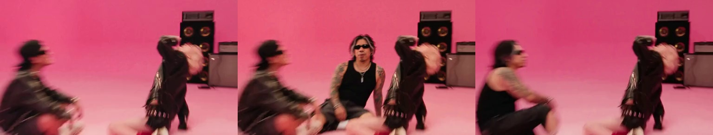
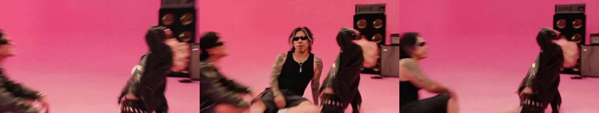
In a darker shot, the target mask disappeared on several frames. The generated character flashed and parts of the original costume survived. Repairing the missing masks produced a much more usable take. This was a useful reminder to inspect what we were feeding the model before writing another elaborate prompt.
Repairing a mask that vanished between frames
Rejected: missing masks produced negative-color flashes and surviving source clothes. Selected: filling nine empty masks restored a consistent character and the ducking motion. The selected take is still brighter than the source, with graphics about two frames early.
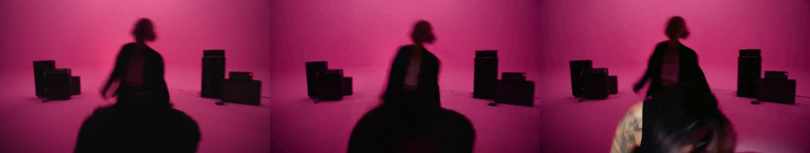
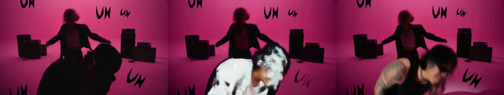
There was also a cut hiding inside what we thought was one shot. The source switched from a singer with a female drummer to a solo performer, but the generation carried the woman and drums into the new scene. Once we split the source at that internal cut and generated the two parts separately, the scene made sense again.
Finding a cut hidden inside a shot
Rejected: the woman and drum kit continued into the solo section. Selected: two separate generations meet at local frame 45, preserving the source cut from a duo to a solo performer.
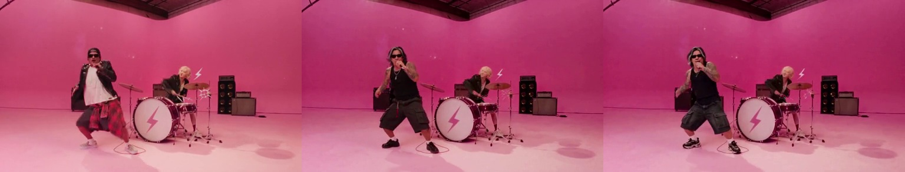
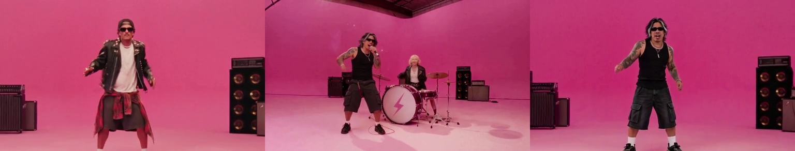
These are the comparisons I wanted to keep in the story. The selected take means more when you can see the rejected one beside it and understand the decision that changed it.
Two more takes from the edit room
Giving both flag hands back to the right person
Rejected: the raised arm near the man was attributed to the woman. Selected: both flags belong to the man again, with the woman and background preserved.
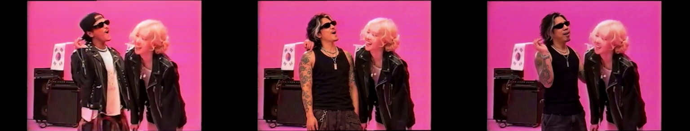
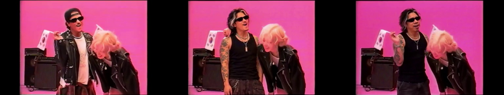
Removing a floating shape from an otherwise useful take
Rejected: a black cloth or limb-like shape appeared behind the man near the left drum toward the end. Selected: that artifact is gone while the woman, glasses handoff, and set remain. Facial expression is more subdued than the source.
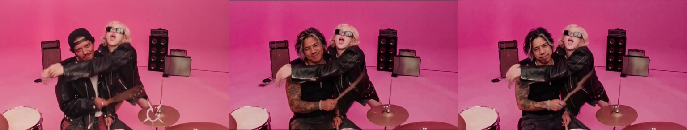
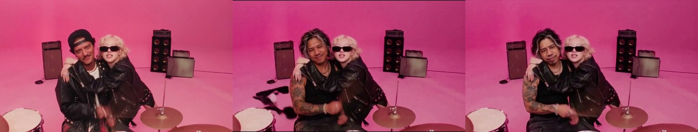
Keeping my identity while borrowing a performance
The most delicate direction was about the face. I wanted the expression and singing rhythm to follow the source, but I did not want the model to reconstruct the original actor's mouth, profile, or moustache on top of my character.
We loosened the demand for an exact expression match and put more emphasis on my likeness. That gave us a clearer creative priority: keep me recognizable, preserve the broad performance, and tolerate some variation in the expression.
The reference sheet, original portrait, shot-specific prompts, and QC notes all supported that decision. We also tried a face-refinement route on footage whose clothes had already changed. For this edit, full-shot generation with better references and corrected guidance proved the more useful direction.
Keeping my face and the close framing
Rejected: the camera widened, the face remained source-like, and an old cuff survived. Selected: the pink reference sheet helped retain a close view, my fuller face, and bare tattooed arms.
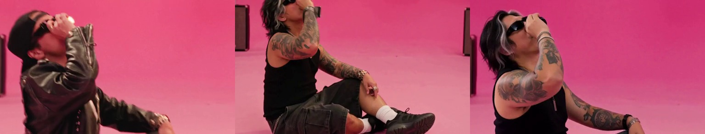
The routes we tried before the final approach
There were several versions of the idea before this became the workflow we could actually finish with. Early tests were smaller, around 0.7 megapixels with ten steps. They let us see whether the replacement worked before committing to larger images. Later we moved to 1344 by 768 and tested eight steps with the acceleration LoRA. That was a practical production choice, not a claim that fewer steps always make a better image.
We explored a stronger first-frame reference: take the composition of a particular shot, establish my character within it, and use that image alongside my original portrait to guide the moving version. Some scene-specific references helped the model hold onto the setting. Others carried too much of the source actor into the result, or encouraged the wrong crop. The pink studio character sheet gave us a more consistent place to start without making every reference inherit the original face.
We also tried slowing the guidance down, then restoring the generated footage to the original timing. The hope was to give the performance more room to resolve. It also meant generating more frames, waiting longer, and using more memory. The final focused repairs returned to original timing rather than treating a slower guide as the answer to every shot.
A dedicated character-swap LoRA got its own local comparison with and without the extra influence. It did not give us a clear enough improvement in likeness to become the default. Face-only refinement was another attractive idea: keep the good clothes and background, crop the face, regenerate it, and merge it back. Those tests brought their own problems with guidance, pose, glasses, and the join back into the image. For this cut, we went back to replacing the whole shot.
We even tried the original-color video as guidance when the inverted version misbehaved. That improved one take, but in the fast pan it added my character instead of removing the old one. The lesson became very practical: choose the reference and guide that solve this particular shot, and check the mask before asking for another take. We ended with shot-specific prompts, a consistent character sheet plus my portrait, and corrected target masks where the automatic tracking needed help.
Under the hood, the later repairs ran at 1344 by 768 with eight sampling steps and the H3 ACC 8-step LoRA. Reference images were kept compact, up to a 768-pixel edge. OpenRouter-backed prompt tools were part of the setup; prepared prompts could then travel with the jobs without needing another language-model call for every render.
Those settings helped make iteration practical. The creative decisions still came from looking at the takes.
Putting the performance back together
As the selected shots accumulated, we stitched them back into the original sequence and brought the source audio across the full edit. The final pass included the cut boundaries, because a good shot can still make a bad edit if it begins or ends on the wrong frame. We caught a one-frame flash of the source actor that way and corrected it.
The assembled cut runs 45.25 seconds at 24 frames per second. There are still small differences in lighting, hair, accessories, and facial performance. One dark shot remains brighter than I would ideally want. The visual reviews and audio timing checks were useful, but they are not a claim of perfect lip sync.
The scale of this little production
Open the take book · all recorded shot groups
Counts combine earlier versions and experiments. Shot 5 needed no generation. Group 21 includes its two separately rendered sections.
| Shot group | Jobs submitted | Completed takes |
|---|---|---|
| 1 | 7 | 6 |
| 2 | 7 | 6 |
| 3 | 11 | 10 |
| 4 | 7 | 5 |
| 6 | 6 | 5 |
| 7 | 7 | 6 |
| 8 | 6 | 5 |
| 9 | 7 | 5 |
| 10 | 5 | 5 |
| 11 | 11 | 11 |
| 12 | 7 | 6 |
| 13 | 12 | 9 |
| 14 | 4 | 4 |
| 15 | 3 | 3 |
| 16 | 4 | 4 |
| 17 | 9 | 9 |
| 18 | 4 | 3 |
| 19 | 5 | 3 |
| 20 | 7 | 7 |
| 21 | 6 | 6 |
| 22 | 10 | 9 |
| 23 | 5 | 5 |
| 24 | 7 | 5 |
| 25 | 4 | 4 |
| 26 | 7 | 6 |
| 27 | 3 | 3 |
| 28 | 3 | 3 |
| 29 | 5 | 5 |
Forty-five seconds sounds small until you count what went into it. The final sequence contains 30 visual shots. We managed them as 29 numbered groups, because the two parts of the hidden cut were joined back into one delivery clip. One woman-only section passed through without replacement.
Across the surviving production records, we submitted 179 jobs and completed 158 renders. Another 18 jobs were cancelled and three ended in a failed state. Those are recorded jobs across tests and earlier versions, not 158 clips in the final cut, and not a complete count of every internal retry or unrecorded experiment.
The most revisited completed shot group was shot 11, with 11 completed takes. Shot 3 had ten completed takes from eleven submissions. Shot 13 had nine completions from twelve submissions. That is what the revision loop looked like in practice: a small number of demanding moments could absorb a lot of the attention.
Across all recorded completed jobs, generation time adds up to 9 hours, 38 minutes and 32 seconds. About 6 hours and 50 minutes of that ran on the local 3090; the rented workers contributed about 2 hours and 48 minutes. These are summed worker generation durations, including loading and output stages, not pure GPU sampling time. Concurrent jobs overlap, so this number is different from time on the clock.
Our peak observed rendering concurrency was two workers. Sometimes that meant two rented 5090s, and later it meant the local card and a cloud worker together. That is the peak supported by the recorded render events, rather than simply counting machines that happened to be rented.
The recorded window from first job creation to last completion was 12 hours, 9 minutes and 41 seconds. It includes preparation, waiting, review, failures, and rework. It does not cover every earlier experiment, and it should not be read as a benchmark for producing any 45-second video.
The rental records give us a rough compute budget, too. At recorded rates of about $0.91 to $1.14 per hour, six rentals total approximately $6.25 when we multiply rate by recorded lifetime. A seventh has conflicting lifetime records: including its uncertain $1.63 would put the modeled subtotal at about $7.87. These are estimates, not invoices. Storage, transfers, image and language-model usage, and my local electricity are outside that figure.
I find those numbers useful because they describe the production I actually directed: a lot of small takes, a few stubborn shots, and a farm whose usefulness depended on what was ready to render next. Adding GPUs gave us capacity. Organizing the work determined how well we used it.
What interests me most is the production method that emerged. I could design a character, direct from my PC or phone, and have agents prepare, dispatch, monitor, and review the work around that direction. The system could handle many of the repetitive steps while I kept making the decisions about who this character was and which performance felt right.
The original idea was to put myself in a music video. Along the way, I started building a small studio around the process.
The cut we brought home
A character-replacement experiment using MiniMax H3, a custom dispatcher and an agent crew. Comparisons show actual source footage and actual takes.